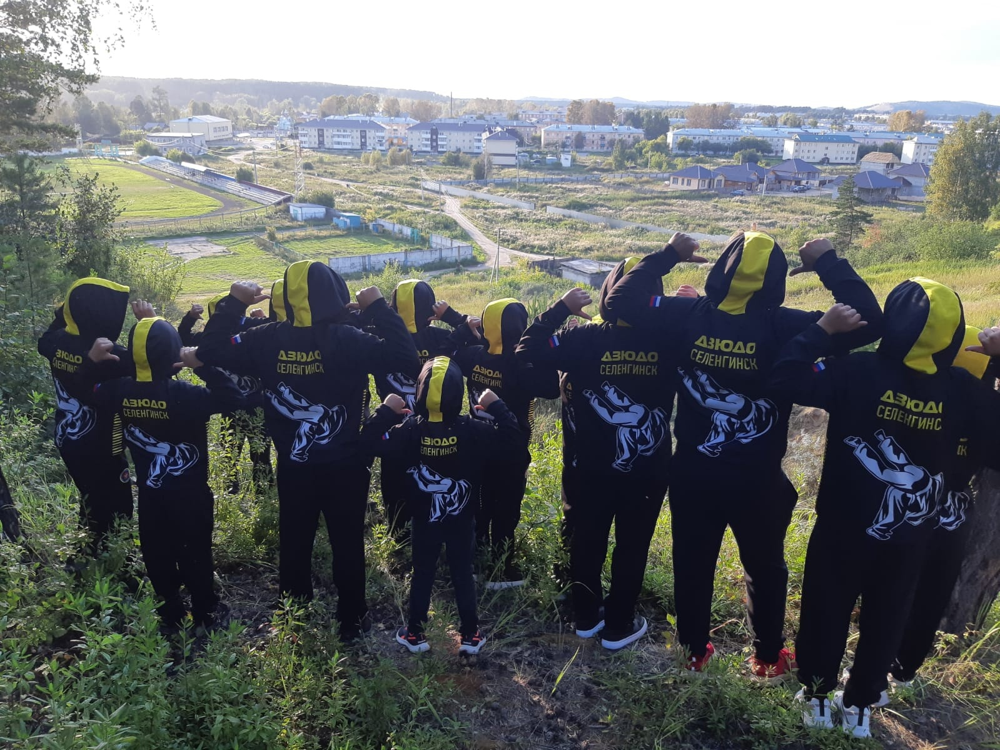

Хобби - дзюдо
Давайте я вам расскажу немного о таком спорте, как дзюдо.
Дзюдо — это японское боевое искусство, которое было разработано в конце XIX века Джигоро Кано. Эта дисциплина не только спортивная, но и философская, пропагандирующая принципы взаимоуважения, самоконтроля и взаимопомощи. В дзюдо уделяется внимание не только технике бросков и хваток, но также тактическим и стратегическим аспектам борьбы. Тренировки включают в себя физическую подготовку, улучшение координации движений, а также развитие ментальной силы. Занятие дзюдо может приносить множество выгод:
- Улучшение физической формы
- Развитие самодисциплины
- повышение уровня уверенности в себе
- умение эффективно реагировать в стрессовых ситуациях
Кроме того, участие в соревнованиях по дзюдо может дать возможность испытать свои навыки в практической борьбе и продвигаться в рангах, что вносит элемент соревновательного духа в это замечательное занятие.
Теперь я вам расскажу, с чего начался мой путь.
В нашей школе открылся новый кружок. Мне очень нравился спорт и я решил попробовать себя в этом виде спорта. И так я начал заниматься дзюдо с 5 класса. Сначала получалось плохо, но потом поняв всех тонкостей, у меня стало получаться и выигрывать на соревнованиях. Смог дойти до звания КМС.
Фото с тренировок
Наша команда Кабанского района
Благодарность
Хотел бы выразить благодарность всем, кто поддерживал меня в моем увлечении дзюдо и других увлечениях. Спасибо моим тренерам, товарищам по команде и всем, кто верил в мои возможности.
Без вашей поддержки и вдохновения мой путь в мире дзюдо не был бы таким насыщенным и интересным. Ваша поддержка мотивирует меня продолжать двигаться вперед и достигать новых вершин.
Также спасибо моей семье и друзьям за постоянную поддержку в моих творческих начинаниях и стремлении к саморазвитию.
Связь со мной
Если у вас есть вопросы, комментарии или вы хотели бы поделиться своим опытом, не стесняйтесь связаться со мной.
Email: mankhanovm@mail.ru